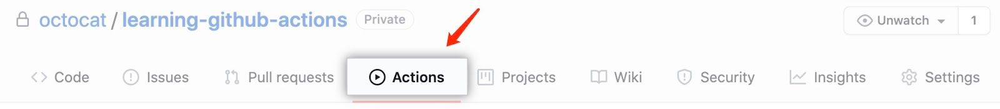

Build a Jenkins pipeline by using Jenkinsfile Runner GitHub Actions
|
This site is the new docs site currently being tested. For the actual docs in use please go to https://www.jenkins.io/doc. |
This tutorial shows you how to use Jenkinsfile Runner GitHub Actions in the GitHub Actions context.
The concept
Classical Jenkins instances bind physically with the permanently running servers. Jenkinsfile Runner packages the Jenkins core and other necessary items, and serves as an entry point to your pipeline job. At a high level, Jenkinsfile Runner GitHub Actions wrap around the Jenkinsfile Runner and other necessary modules for the user. Once the user commits the changes to the remote GitHub repository, the GitHub Actions will run the pipeline as defined by the Jenkinsfile. After the pipeline ends, the user can view the pipeline log in the GitHub Action page. Furthermore, the user can integrate the GitHub Actions in the marketplace with the Jenkinsfile Runner GitHub Actions.
Prerequisites
For this tutorial, you will need:
-
A GitHub account
-
A GitHub repository
-
Git installed locally
-
Fundamental knowledge of GitHub Actions and how they work.
-
If you want to integrate Jenkins plugins, you also need to know what JCasC is. This tutorial reviews some basic concepts of JCasC.
Create a GitHub repository
We recommend users refer to the GitHub official guide as a starter.
-
In the upper-right corner of GitHub, use the “+” drop-down menu, then select New repository.
-
Provide a memorable name for your repository such as "hello-world".
-
Optionally, add a description of your repository. For example, "My first repository on GitHub".
-
Choose a repository visibility.
|
GitHub Actions are free for standard GitHub-hosted runners in public repositories and self-hosted runners. If you make the repository private, each GitHub account receives a predetermined amount of free minutes and storage for use with GitHub-hosted runners. Please refer to the billing and pricing of GitHub Actions for more information. |
Create a Jenkinsfile
In this section you will create a Jenkinsfile, which defines how to run the Jenkins pipeline.
Refer to the official guide for more details about the workflow definitions.
The following is an example Jenkinsfile, where the name of this Jenkinsfile is Jenkinsfile:
pipeline {
agent any
stages {
stage('hello') {
steps {
sh 'echo Hello Jenkins!'
}
}
}
}Create a plugin list file
In this section, you will create a plugin list file, which specifies the plugins you will need to install in the ephemeral Jenkins instance. Please refer to the valid plugin input format.
The following example plugin list file will install all the specified latest plugins.
git
docker
junit
credentials
blueoceanIn our example, we don’t have to install any extra plugins, so you can create an empty plugin list file called “plugins.txt”.
Create a workflow definition in the container
In this section, you’ll learn how to create a workflow definition so you can run Jenkins pipeline with GitHub Actions. The following steps are required to create the definition.
-
In your local GitHub repository prepare a workflow definition YAML file with a name, such as
ci.yml, in the “.github/workflows” directory. -
Create the name of your workflow and event that triggers your workflow. Refer to the available events that trigger workflows. In our example, the
pushevent triggers the workflow when a commit or tag is pushed.name: Java CI on: [push] -
Use an Ubuntu runner for the job.
jobs: job-name: runs-on: ubuntu-latest -
(Optional) If you want to use
jfr-container-actionlater, you need to declare this using theghcr.io/jenkinsci/jenkinsfile-runner:masteror any image extending it. If you choose to usejfr-static-image-action, you can skip this step.jobs: job-name: runs-on: ubuntu-latest container: image: ghcr.io/jenkinsci/jenkinsfile-runner:master -
Call the
actions/checkout@v2to pull your codes into the runner.-
“Call” means “uses” in the workflow definition specifically. You can check the details about the “uses” keyword.
- uses: actions/checkout@v2
-
-
Call the Jenkinsfile-runner actions.
-
If you use
jfr-container-action, you need to calljenkinsci/jfr-container-action@masterand provide the necessary inputs.uses: jenkinsci/jfr-container-action@master with: command: run jenkinsfile: Jenkinsfile pluginstxt: plugins.txt -
If you use
jfr-static-image-action, you need to calljenkinsci/jfr-static-image-action@masterand provide the necessary inputs.uses: jenkinsci/jfr-static-image-action@master with: command: run jenkinsfile: Jenkinsfile pluginstxt: plugins.txt
-
If you use jfr-container-action, you can verify your work by checking the following complete example.
name: Java CI
on: [push]
jobs:
jenkins-container-pipeline:
runs-on: ubuntu-latest
container:
image: ghcr.io/jenkinsci/jenkinsfile-runner:master
steps:
- uses: actions/checkout@v2
- uses:
jenkinsci/jfr-container-action@master
with:
command: run
jenkinsfile: Jenkinsfile
pluginstxt: plugins.txt
jcasc: jcasc.ymlIf you use jfr-static-image-action, you can verify your work by checking the following complete example.
name: Java CI
on: [push]
jobs:
jenkins-static-image-pipeline:
runs-on: ubuntu-latest
steps:
- uses: actions/checkout@v2
- uses:
jenkinsci/jfr-static-image-action@master
with:
command: run
jenkinsfile: Jenkinsfile
pluginstxt: plugins.txt
jcasc: jcasc.ymlThere is another powerful GitHub Action list called Jenkinsfile Runner Runtime Actions. For these GitHub Actions, you can run them in any runners, which are Windows, Linux and macOS. You can check their step by step usage here.
Access the workflow logs
Once you create your workflow definition, you can commit all the local changes to the remote repository. Pushing your commits will trigger and execute your workflow. After this workflow has started, you can see the visualization graph of the run’s progress and view each step’s activity on GitHub. If you want to learn more about viewing your workflow details, refer to the official guide in GitHub.

Add JCasC (optional)
Typically, we need to access the web UI to set up Jenkins. However, we’re unable to access the web UI under the circumstances of running Jenkins pipeline in the GitHub Actions, since the Jenkins instance is ephemeral. The JCasC (Jenkins Configuration as Code) plugin can configure this ephemeral Jenkins instance, by providing the human-readable declarative configuration files.
In this example, we review how to set up the environment variables by JCasC and access them in the Jenkinsfile.
-
Create a JCasC YAML file called
jcasc.ymland declare the environment variables:jenkins: globalNodeProperties: - envVars: env: - key: hello value: world -
Create a Jenkinsfile:
pipeline { agent any stages { stage('test casc env') { steps { echo "JCasC env.hello: ${env.hello}" } } } } -
Specify the
jcasc.ymlin the GitHub Actions input:uses: jenkinsci/jfr-container-action@master with: command: run jenkinsfile: Jenkinsfile pluginstxt: plugins.txt jcasc: jcasc.yml
For additional information, refer to the examples provided by the Configuration as Code plugin, and learn how to configure the Jenkins instance without using the UI page. Some plugins do not have concrete examples, but you can debug and find their JCasC in the UI page. You can check the configuration in Manage Jenkins → Configuration as Code → View Configuration. Then, you can copy the parts you need to the JCasC file.
Add and configure plugins (optional)
There are many powerful plugins that can be part of your Jenkins instance. You can add the plugins in the plugin list file, and configure the plugins in the JCasC YAML file as needed.
In this example, we review how to install JDK11 in the ephemeral Jenkins instance.
-
Specify
adoptopenjdkplugin in the plugins.txt file. As the version is not specified, the latest version will be installed.adoptopenjdk -
Create a JCasC Yaml file named
jcasc.ymland specify which JDK version to install.tool: jdk: installations: - name: jdk11 home: "~/jdk11" properties: - installSource: installers: - adoptOpenJdkInstaller: id: "jdk-11.0.14.1+1" -
Create a Jenkinsfile. Remember to set up JDK11 as a tool.
pipeline { agent any tools { maven 'maven' jdk 'jdk11' } stages { stage('env') { steps { sh 'mvn --version' } } stage('build') { steps { sh 'mvn clean install -B --no-transfer-progress' } } } } -
Specify the
jcasc.ymlin the GitHub Actions input.uses: jenkinsci/jfr-container-action@master with: command: run jenkinsfile: Jenkinsfile pluginstxt: plugins.txt jcasc: jcasc.yml
Configure ephemeral Jenkins instance (optional)
Sometimes, JCasC might not be able to provide the configurations you need. In this case, refer to Groovy Hook Scripts to set up the ephemeral Jenkins instance. These Groovy scripts will have full access to the ephemeral Jenkins server and will be executed right after Jenkins starts up.
| This option and its core are still in progress, so it’s not mentioned in the Jenkinsfile Runner GitHub Actions official guide. However, it does work and can be used at this time. |
In this example, we review how to use Groovy scripts to set up the Jenkins instance:
-
Create a directory, for example
groovy.init.d, to store all your Groovy setup scripts. -
Create a Groovy file called
test.groovy.-
Do not name it
init.groovybecause this name is already occupied.
-
-
Add the debug output:
println 'Hello Groovy Hooks!' -
Specify the
groovy.init.ddirectory in the GitHub Actions input.uses: jenkinsci/jfr-container-action@master with: command: run jenkinsfile: Jenkinsfile pluginstxt: plugins.txt jcasc: jcasc.yml initHook: groovy.init.d -
Check the GitHub Actions log and verify that the groovy script is executed right after Jenkins starts up, before the actual pipeline is run.
Integrate with other GitHub Actions (optional)
You can integrate this process with other GitHub Actions in the marketplace, via Jenkinsfile Runner GitHub Actions.
However, if the starting time of the Jenkins container is different in these GitHub Actions, some GitHub Actions cannot be used.
In other words, jfr-static-image-action cannot be integrated with other GitHub Actions except actions/checkout.
However, you can integrate other GitHub Actions with jfr-container-action and jfr-runtime-action.
Refer to their differences in the official guide.
In this example, we review how to integrate the "actions/setup-node" GitHub Action with jfr-runtime-action to compile a JavaScript project:
-
Use an Ubuntu runner for the job.
jobs: job-name: runs-on: ubuntu-latest -
Call the
actions/checkout@v2to pull your codes into the runner.- uses: actions/checkout@v2 -
Call the
actions/setup-node@v3to set up node 18.- uses: actions/setup-node@v3 with: node-version: 18 -
Call the
jenkinsci/jfr-setup-action@masterto set up Jenkins.- uses: jenkinsci/jfr-setup-action@master -
Call the
jenkinsci/jfr-plugin-installation-action@masterto install additional plugins.- uses: jenkinsci/jfr-plugin-installation-action@master with: pluginstxt: plugins.txt -
Call the
jenkinsci/jfr-runtime-action@masterto run the Jenkins pipeline.- uses: jenkinsci/jfr-runtime-action@master with: command: run jenkinsfile: Jenkinsfile
Refer to the official repository for the full example.
Wrapping up
Well done! You have now built your project by using Jenkinsfile Runner GitHub Actions!
When you want to make your ephemeral Jenkins instances in the GitHub Actions more extensible, you can refer to the official guide for more details. The official guide shows the parameters of these GitHub Actions, their comparisons, and other advanced functionality. You can also find additional examples in the official demo repository.
To learn more about the contributions of Jenkinsfile Runner GitHub Actions, refer to: